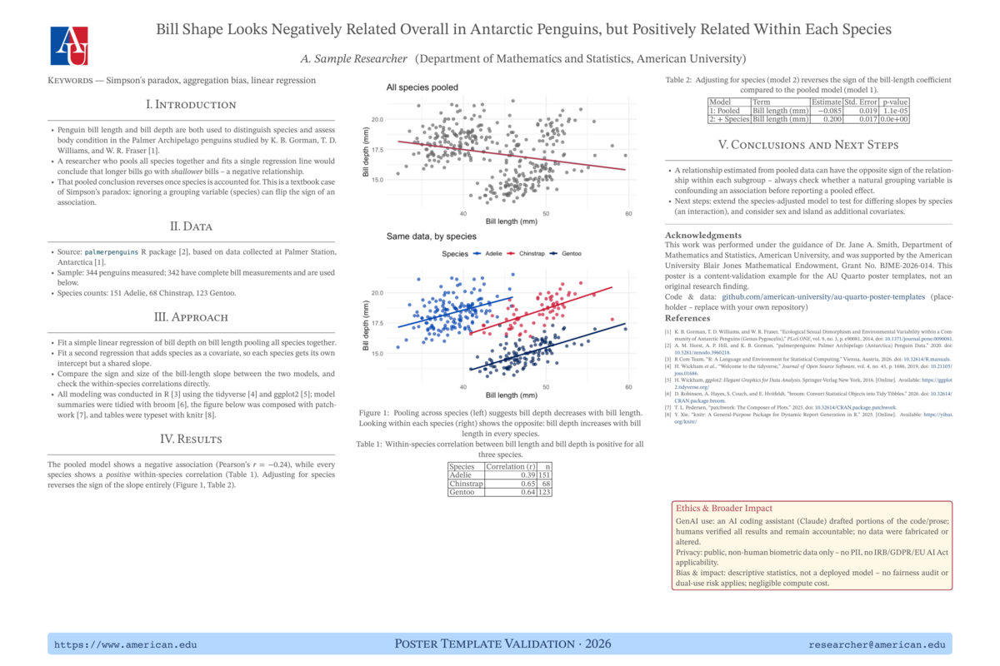
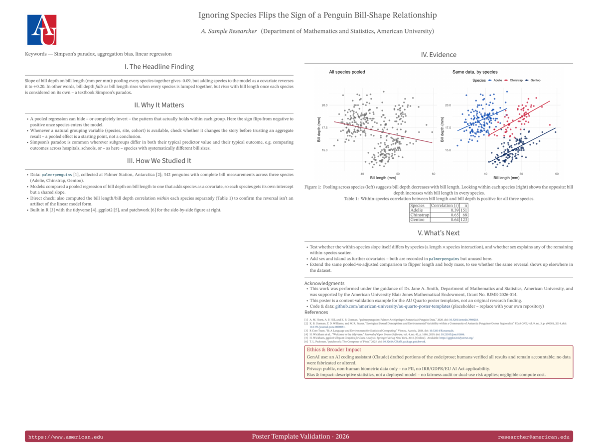
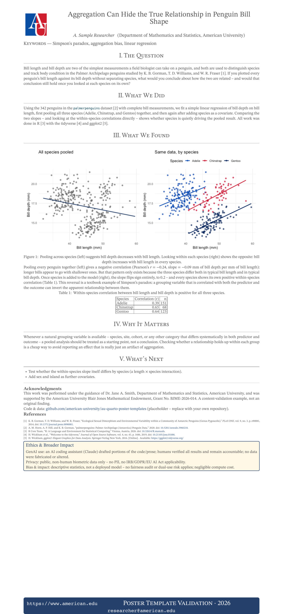
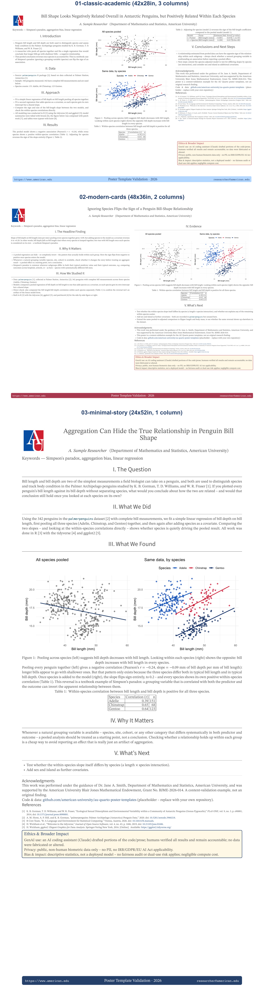

Templates
Templates
The three templates offer different design approaches that may be tailored for a particular purpose.
- All three share the same content structure (level-2
##headings become poster sections/panels automatically) so switching between them is mostly a matter of swapping the YAML/SCSS, not rewriting your text.
templates/01-classic-academic/: traditional 3-column layout (Intro / Methods / Data / Results / Conclusions), serif headings, the closest analog to the old posterdown betterland template.- Print size 42x28 in, 3 Typst columns.

01-classic-academic poster preview templates/02-modern-cards/: dashboard-style card grid with a bold accent color, headlining its key finding as one sentence rather than an isolated number.- Print size 48x36 in, 2 Typst columns (fewer, larger panels).
- This size doubles as a standard conference board size – see Choosing a print size below.
- This template’s content was originally short enough that Typst never started the second column at all (everything landed in column 1, leaving column 2 blank except the floated Ethics panel). Fixed by adding a manual
#colbreak()(raw Typst, right before## Evidence) so the figure/table/“What’s Next” content explicitly starts column 2, plus enough added text/a correlation table to make the two columns’ content roughly comparable to01-classic-academic’s. - The figure itself was always full column width – if you add your own full-page figures, note that
out-width: "100%"measured against the page width rather than the current column’s width immediately after a#colbreak()in local testing, overflowing past the margin; setting an explicit absoluteout-width(e.g."20in") sidesteps it. - The Headline Finding is plain markdown, not a per-format
.statblock. An earlier draft set the two slope numbers on their own line at 72pt (with duplicated```{=html}/```{=typst}blocks, since a web-only.statCSS class doesn’t reach the print output) – bare digits and an arrow glyph with no verb tying them into a sentence, and the arrow’s stroke weight didn’t reliably match the surrounding bold text in either format. It now reads as one sentence (“pooling every species together gives X, but adding species … reverses it to Y”) at body size, so pandoc’s normal**bold**emphasis handles both outputs identically – no raw blocks, no per-format duplication, no font-fallback weight mismatch to chase.

02-modern-cards poster preview templates/03-minimal-story/: a single flowing narrative column, meant to be read like a short article; flat design, generous whitespace.- Print size 24x52 in (portrait banner), 1 Typst column.

03-minimal-story poster preview
Each preview above (images/previews/preview-*.png) is a 1200px-wide PNG rendered from that template’s own poster-typst PDF. Neither these nor comparison.png below are produced by quarto render; regenerate both with Rscript scripts/make-previews.R after a content change (render the PDFs first).
All three are currently filled in with the same worked example (a Simpson’s-paradox analysis of bill shape across penguin species, using palmerpenguins) so the three visual styles are directly comparable:

comparison.pngstacks the three posters as separate full-width rows (labeled with the template name/size) using the Rmagickpackage.- Rows, not side-by-side columns:
03-minimal-storyis a tall 24x52in portrait banner, while the other two are landscape (42x28in, 48x36in); scaling all three to a common height for a side-by-side layout shrinks the banner to an unreadable sliver, so each poster instead gets its own row at a common width, sized for legibility. - Each page is rasterized at 2x its target pixel width and downsampled, rather than rendered at full 300 dpi print resolution first – a 48x36in page at 300 dpi is a 14400x10800 bitmap, and the supersampled version is indistinguishable at display sizes here for a fraction of the memory.
03-minimal-story’s header grid (logo/title column widths) defaults to values sized for wider posters, so its long title overflowed the page margin at the defaulttitle-font-size. Fixed by settinguniv-logo-column-size: 3,title-column-size: 16,title-font-size: 44, andauthors-font-size: 28in that template’s YAML (its 24in width leaves only 20in inside the page’s 2in margins, vs. the extension’s 10in + 20in defaults).
- Rows, not side-by-side columns:
A lesson from filling in the templates: the single-column minimal-story layout has noticeably less capacity per page than the 2- or 3-column layouts. With this same content, it initially overflowed onto a second Typst page at 24x36in;
- The version here (with a per-species correlation table and a “What’s Next” section added, to use the extra room well rather than leave it blank) needs
24x52into stay on one page. - If you adapt this template with less content than that, you can size it down; budget less text per page than you would for the classic or modern-cards versions either way.
Choosing a print size
size: (under poster-typst: in each template’s YAML) takes any Typst-compatible "WIDTHxHEIGHT" in inches; it isn’t tied to a specific venue.
- A few sizes recur often enough at ML/data-science conferences that it’s worth calling out how the templates map onto them (all landscape, given as the venue’s own H x W convention next to the equivalent
size:string):
| Venue / convention | H x W | size: string |
|---|---|---|
| 3ft x 4ft (a common poster-board default) | 36in x 48in | "48x36" |
| ICML | 36in x 48in (91cm x 121cm) | "48x36" |
| NeurIPS (narrower boards) | 36in x 60in | "60x36" |
| NeurIPS (wider boards) | 36in x 72in | "72x36" |
02-modern-cards already ships at "48x36", so it’s ready for either the generic 3ft x 4ft board size or ICML as-is.
- To target a different size (e.g. NeurIPS), on any template:
- Change
size:to thesize:string from the table (or any other"WxH"you need). - If the aspect ratio changes a lot (e.g. going from 48x36 to 72x36), reconsider `num-columns. Wider boards generally read better with one more column than a narrower version of the same layout.
- Re-render (
quarto render poster.qmd --to poster-typst) and check for overflow onto a second page or, conversely, excess blank space;
- Adjust
body-font-size, trim/add content, or nudgesize:again as needed. 01-classic-academicand03-minimal-storyaren’t currently tuned to any of the sizes above, so budget an iteration or two if you retarget them.